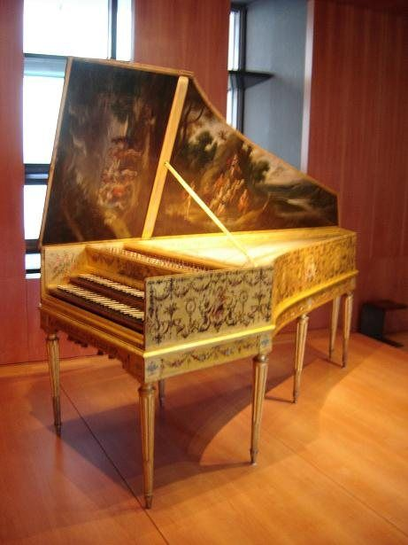
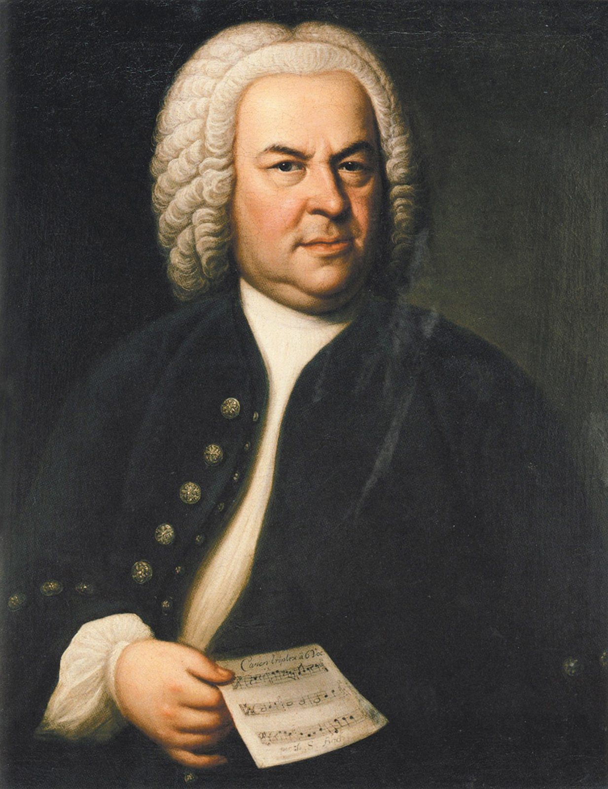
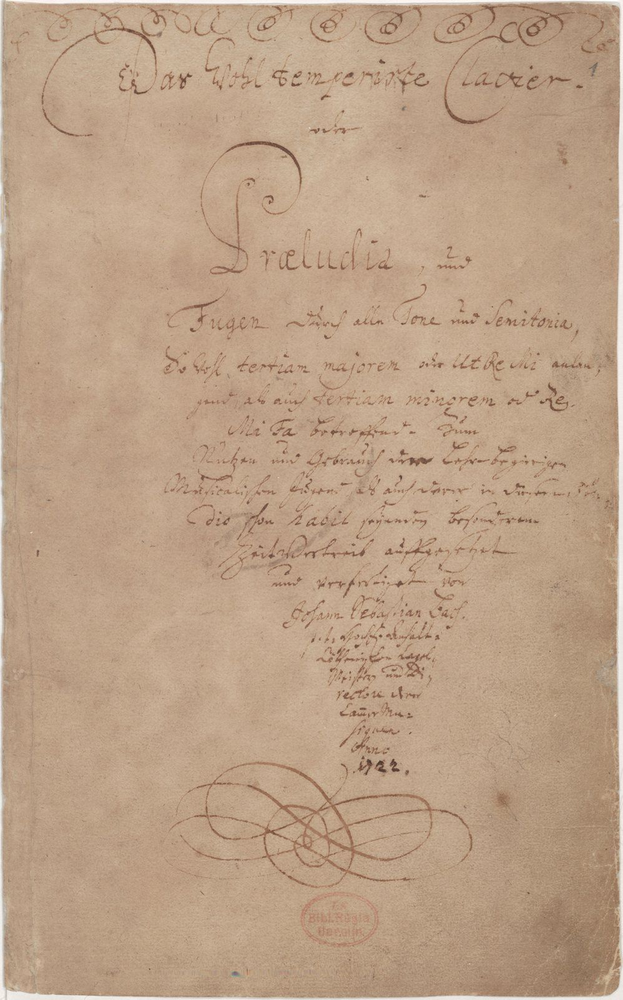
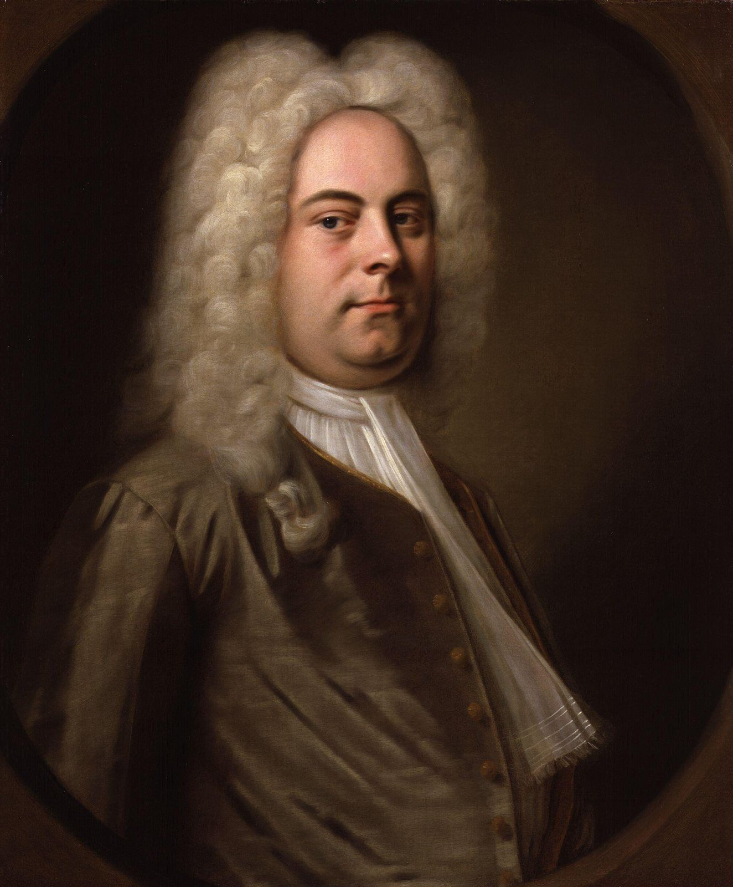

1748 年，德国莱比锡。一位画家给一个六十多岁、有点发福的男人画肖像。
男人穿着假发和深色外套，手里没有拿乐器，而是拿着一小张乐谱。那上面只写了几行音符，却是一道谜题：同一段旋律，几个声部错开时间一起唱，要怎么排才能刚好和谐？
这个男人叫约翰·塞巴斯蒂安·巴赫。他手里的那种曲子叫“卡农”。两年后他去世，此后几十年里几乎被人遗忘。再后来，他成了很多人心目中最伟大的作曲家。
继续讲巴洛克
那时候我们已经聊过布鲁斯和民谣，突然跳到三四百年前的欧洲，好像是换了一个频道。但这一章想说的是：巴洛克不只是“古典音乐”里的一个时期，它是今天几乎所有流行音乐的“底层结构”的发明者。
- 低音线 + 和弦 + 旋律：巴洛克乐队里有一组专门负责“低音和和弦”的人，叫“通奏低音”。这就是今天贝斯、吉他、键盘组成的节奏组的祖先
- 循环：一条低音线反复几十遍，上面不断变化，叫“固定低音”。这就是今天的 loop
- 和弦进行：《卡农》那八个和弦，被无数流行歌拿去用过
- 大调和小调：今天我们说一首歌“明亮”或“忧伤”，这套大小调体系就是在巴洛克时期定型的
所以布鲁斯是流行音乐的一条根，民歌是另一条根，而巴洛克更像是这两条根底下的“土壤”：它决定了“和弦”这件事本身是怎么运作的。
I · baroque一颗不规则的珍珠
“巴洛克”这个词一般认为来自葡萄牙语 barroco，意思是“形状不规则的珍珠”。它最初是个贬义词，用来嘲笑 17 世纪那些过分华丽、繁复、弯弯曲曲的建筑和艺术。那个时代的音乐家并不知道自己是“巴洛克音乐家”，这个标签是后来的人贴上去的。
音乐史一般把 1600 年到 1750 年叫作巴洛克时期。两个年份都有象征意义：1600 年前后，意大利出现了最早的歌剧；1750 年，巴赫去世。
放到中国的时间线上看会更直观：巴洛克开始的时候，中国还是明朝万历年间；巴赫最活跃的那几十年，正是康熙、雍正和乾隆初年。本章后面会讲到，当时的紫禁城里真的有人在弹羽管键琴。
从“几条线”到“一条线加和弦”
巴洛克之前的文艺复兴音乐，主要是几条地位平等的旋律交织在一起（想象四个人各唱各的，但合在一起很和谐）。巴洛克带来的最大变化是：音乐开始有了“主次”。最上面一条旋律最重要，最下面一条低音线是地基，中间用和弦填满。这种“旋律在上、低音在下、和弦在中间”的结构，就是你今天听到的几乎每一首流行歌的结构。
II · basso continuo通奏低音：最早的节奏组
巴洛克乐队里几乎一定有一组人，从头到尾不停地演奏，叫“通奏低音”（basso continuo，意思是“持续不断的低音”）。它通常由两种乐器组成：
- 一件低音乐器：大提琴、低音维奥尔琴或巴松管，演奏写好的低音线
- 一件和弦乐器：羽管键琴、管风琴或鲁特琴，在低音上面即兴弹出和弦
有意思的是“即兴”这两个字。作曲家通常只写出低音线，再在低音下面标几个小数字，告诉键盘手“这里该弹什么和弦”，具体怎么弹、弹多密、加不加装饰，由键盘手自己决定。这叫“数字低音”（figured bass）。
如果你看过爵士乐手或者伴奏乐队的谱子，会发现它们几乎一模一样：只有一行和弦名，具体怎么弹全看乐手。通奏低音的键盘手，就是三百年前的伴奏乐手。今天乐队里的贝斯手加键盘手（或节奏吉他手），干的是同一件事。
大提琴拉出一条一步一步往下走的低音线。
键盘手按数字低音即兴弹出和弦。
旋律放在最上面，结构完整了。
第三个和你今天听到的任何一首“贝斯 + 键盘 + 主唱”的歌，结构是一样的。
III · ground bass固定低音与《卡农》
如果通奏低音是节奏组，那么“固定低音”（ground bass）就是循环（loop）。作曲家写一条很短的低音线，让它一遍又一遍地重复，上面的旋律和和声却不断变化。听众一边被低音的重复“催眠”，一边期待上面又会出现什么新东西。
这和今天的嘻哈、电子音乐几乎是同一个思路：一个 loop 不停地转，说唱歌手或合成器在上面变化。
帕赫贝尔的《卡农》
最有名的固定低音，就是德国作曲家约翰·帕赫贝尔（Johann Pachelbel，1653–1706）的《D 大调卡农》。它的低音只有八个音，从头到尾重复了二十多遍：
“卡农”（canon）本来是一种作曲技法，意思是“规则”：同一段旋律，几个声部错开时间先后进入，像轮唱。在帕赫贝尔的《卡农》里，三把小提琴演奏完全相同的旋律，每一把比前一把晚两小节进来，而它们下面始终是那八个低音。
这首曲子写成后在很长时间里默默无闻，直到 20 世纪才被重新发现。1968 年一张法国室内乐团的录音让它突然流行起来，此后成了婚礼、广告和电影里最常出现的古典音乐之一，在中文世界也常被直接叫作“卡农”。
大提琴和羽管键琴，八个音一圈。
在低音上搭出八个和弦。
旋律一步一步往下走。
同一段旋律，每把晚两小节。这就是“卡农”。
哀歌低音：一步一步往下沉
巴洛克作曲家还发现，一条半音一步一步往下走的低音，会让人感到悲伤和无可挽回。这种低音后来有个专门的名字，叫“哀歌低音”（lament bass）。最有名的例子，是英国作曲家亨利·珀塞尔（Henry Purcell）的歌剧《狄朵与埃涅阿斯》里，女王狄朵临死前唱的那首咏叹调。
这个手法一直活到今天。很多摇滚和流行歌的开头，都有一条半音下行的低音或和弦，比如 Led Zeppelin《Stairway to Heaven》的前奏。
G – F – E♭ – D，一步一个全音。
G – F♯ – F – E – E♭ – D，每一步只走半音。
第二个多了几个“台阶”，每一步都只往下挪一点点，像一个人慢慢走下楼梯，不愿意走到底。
IV · instruments乐器：羽管键琴与小提琴
羽管键琴：会“拨”的键盘
巴洛克时期还没有钢琴（钢琴在 1700 年前后才被发明，到 18 世纪末才普及）。最重要的键盘乐器是羽管键琴（harpsichord）。它的原理和钢琴完全不同：钢琴是用小锤“敲”弦，羽管键琴是用一个小拨子（最早用鸟的羽毛管做）“拨”弦。所以它的声音更像吉他或竖琴，清脆、明亮、带一点金属感。

拨弦带来一个重要的限制：羽管键琴的音量几乎不受按键力度影响。你轻按、重按，声音一样大。所以巴洛克音乐的强弱变化，往往不是“慢慢变强”，而是“台阶式”的：一段大声（所有乐器一起），一段小声（只留几件乐器，或换到另一层键盘），像回声一样。这叫“阶梯式力度”（terraced dynamics）。
每个音“按得越来越重”，但音量不变。
同样越按越重，声音真的越来越大。
全体齐奏，然后只剩羽管键琴“回声”。
其他几件主角
- 小提琴家族：小提琴、中提琴、大提琴在巴洛克时期成为乐队的核心。意大利克雷莫纳的斯特拉迪瓦里（Antonio Stradivari，1644–1737）做的琴，至今仍是世界上最昂贵的乐器之一。那时的琴弦用羊肠做，揉弦用得很少，声音比今天更干净、更“直”
- 管风琴：教堂里最大的乐器，用管子发声，可以无限延长一个音。通过拉出不同的“音栓”，组合出不同的音色
- 竖笛：今天小学音乐课上的竖笛，在巴洛克时期是正经的独奏乐器
- 自然小号：没有按键，只能靠嘴唇吹出有限的几个音，声音嘹亮，常用于庆典和宗教音乐
拨弦，清脆，带一点金属感。
音可以一直延续，越加音栓越宏大。
巴洛克拉法：几乎不揉弦。
通奏低音的主力。
柔和，带一点气声。
庆典的声音。
V · counterpoint对位：轮唱与赋格
虽然巴洛克发展出了“旋律在上、和弦在下”的结构，但它并没有放弃更古老的技艺：让几条独立的旋律同时走，彼此配合又各自完整。这叫“对位”（counterpoint）。
你早就会的对位：《两只老虎》
你小时候大概唱过《两只老虎》的轮唱：一组人先唱，第二组晚两小节从头开始唱同一首歌，第三组再晚两小节。几个声部唱的是同一段旋律，合在一起却很和谐。这就是最简单的卡农。《两只老虎》的旋律原本来自一首 18 世纪的法国童谣《雅克兄弟》（Frère Jacques）。
赋格：对位的最高形式
赋格（fugue）可以理解为“规则更复杂的轮唱”。它有一个短小、有特点的主题（叫“主题”或“主唱”），先由一个声部单独奏出；然后第二个声部进来，把主题移到另一个调上（通常高五度）再奏一遍，这叫“答题”；与此同时，第一个声部继续往下走，奏出一条和主题配合的新旋律，叫“对题”。第三个、第四个声部也依次进来。所有声部都进来之后，作曲家开始自由地拆解、组合、变化这个主题。
先听熟主题（开头那个向上跳五度的音），再听完整版本：每当这个“跳”出现，就是一个新声部进来了。
巴赫是赋格的大师。他的《平均律钢琴曲集》里有 48 首赋格，晚年的《赋格的艺术》把一个主题变出了十几种赋格和卡农。对很多音乐家来说，巴赫的赋格就像数学里的定理：严格的规则之内，有无穷的美。
VI · ornament & motion装饰与律动
装饰音：三百年前的转音
巴洛克乐谱上写的旋律，往往只是“骨架”。演奏者和歌手被期待在上面即兴加上各种装饰：颤音（在两个相邻的音之间快速来回）、波音（快速碰一下旁边的音再回来）、倚音（先唱一个不属于和弦的音，再“落”到正确的音上）。
这和今天 R&B 歌手的“转音”是一样的：同一段旋律，每个歌手唱出来都不一样，装饰就是个人风格。巴洛克时期的观众去听歌剧，很大程度上就是去听明星歌手怎么即兴装饰。
只有骨架。
颤音、波音、倚音和几个经过音。
马达般的律动
很多巴洛克快板有一个特点：从头到尾一刻不停的十六分音符，像一台马达在转。音乐史上管这叫“马达节奏”（motor rhythm）。听维瓦尔第或巴赫的快板，你会发现它们和今天的电子舞曲有一种奇妙的相似：持续、均匀、推着你往前走。
VII · opera歌剧：说着唱和唱着唱
1600 年前后，意大利佛罗伦萨的一群文人和音乐家想复原古希腊戏剧，他们相信古希腊悲剧是“唱”出来的。复原没有成功，却发明了一种全新的艺术：歌剧。1607 年，蒙特威尔第（Claudio Monteverdi）的《奥菲欧》在曼托瓦首演，通常被看作第一部真正成熟的歌剧。
宣叙调和咏叹调
歌剧要讲故事，又要唱得好听，于是发展出两种唱法：
- 宣叙调（recitative）：像说话一样唱，节奏跟着语言走，伴奏只有通奏低音偶尔垫几个和弦。用来推进剧情、交代对话
- 咏叹调（aria）：真正的“歌”，旋律优美，常常重复，用来表达人物此刻的情感。剧情在这里停下来，让角色尽情抒发
汉密尔顿也是rap吗
这两个问题其实连在一起。音乐剧《汉密尔顿》用说唱来交代大量的历史和对话，用抒情的歌来表达人物的情感。这和巴洛克歌剧的分工几乎一模一样：说唱在这部剧里扮演的，正是三百年前宣叙调的角色。它们都是“说着唱”，都让语言的节奏决定音乐的节奏。
同一个音上快速“说”，羽管键琴偶尔垫一个和弦。
旋律展开，长音、揉音，弦乐跟着。
巴洛克歌剧有很多今天看来奇特的地方。最有名的明星是“阉伶歌手”（castrato）：童年时被阉割以保留高音的男歌手，声音兼有男性的力量和孩童的音域，比如 18 世纪的 Farinelli。这一残酷的做法在 19 世纪后逐渐消失，今天的巴洛克歌剧通常由女歌手或“假声男高音”来唱这些角色。
亨德尔后来在伦敦写了大量意大利歌剧，市场不景气之后，又转向用英语写清唱剧（oratorio）：像歌剧一样有独唱和合唱，讲宗教故事，但没有布景和表演。其中最有名的是 1742 年在都柏林首演的《弥赛亚》。据说在伦敦演出时，国王听到《哈利路亚》合唱时站了起来，从此观众听到这一段都会起立。这个故事是否属实已经无法考证，但起立的传统一直保留到今天。
VIII · concerto协奏曲与维瓦尔第
巴洛克时期还发明了另一种重要的形式：协奏曲（concerto）。它的核心是“对话”：一件或几件独奏乐器，和整个乐队轮流说话，有时争论，有时合作。
回归段：乐队的“副歌”
巴洛克协奏曲的快乐章，常用一种叫“回归段形式”（ritornello form）的结构：乐队全体先奏出一段主题（回归段），然后独奏乐器出来炫技；乐队再奏回归段（常常换了调）；独奏再出来……最后乐队在原调里完整地奏一遍回归段结束。
你可以把回归段理解成一首歌的副歌，独奏段就是主歌：副歌每次回来，你都知道“我们回家了”。
下面的进度条对应图 7 的五段。注意第三段：主题回来了，但换了一个调，听起来“熟悉又有点不一样”。
红发神父和《四季》
安东尼奥·维瓦尔第（Antonio Vivaldi，1678–1741）是威尼斯人，因为一头红发，被叫作“红发神父”。他是神父，却几乎一辈子都在做音乐：在威尼斯一所收养孤女的慈善院当音乐老师，把那里的女孩们训练成了全欧洲闻名的乐团。他一生写了几百首协奏曲。
他最有名的作品是 1725 年出版的四首小提琴协奏曲《四季》。每一首都配了一首十四行诗，描写春夏秋冬的场景：鸟叫、雷雨、猎人、冰面上滑倒的人……音乐把这些场景“画”了出来。这是最早、也最有名的“标题音乐”之一：音乐不只是音乐，还在讲一个具体的画面。
维瓦尔第晚年失去了人气，死在维也纳时很贫穷，他的音乐也被遗忘了近两百年，直到 20 世纪才重新被发现。
IX · bach & handel巴赫与亨德尔
1685 年，德国出生了两个后来最重要的巴洛克作曲家：巴赫和亨德尔。他们出生的地方相距不远，一生都没有见过面，却走了完全相反的路。
巴赫：教堂里的工匠

巴赫一辈子几乎没离开过德国中部。他出身于音乐世家，做过管风琴师、宫廷乐长，1723 年起在莱比锡的圣托马斯教堂当音乐总监，一直到去世。他的工作很“打工人”：每周日要为礼拜准备一首新的康塔塔（一种有独唱、合唱和乐队的宗教作品），还要教合唱团的男孩们唱歌、上拉丁语课。他有二十个孩子，其中几个后来也成了著名作曲家。
在世时，巴赫主要被当作一个了不起的管风琴演奏家，而不是伟大的作曲家，他的风格甚至被年轻一代认为过时了。他去世后几十年里，作品很少被演出。1829 年，20 岁的门德尔松在柏林重新上演了他的《马太受难曲》，才掀起了“巴赫复兴”。
平均律：让 24 个调都能用
巴赫最重要的键盘作品之一是《平均律钢琴曲集》（第一卷完成于 1722 年）。它有一个看起来很朴素的目标：在全部 24 个大小调里，各写一首前奏曲和一首赋格。
为什么这是件大事？因为当时键盘乐器的调音方式，让有些调很好听，另一些调却刺耳得没法用。巴赫支持的“良好调律”（well-tempered），是一种让所有调都能用的调音方法。今天钢琴使用的“十二平均律”，就是在这条路上走到底的结果：把一个八度平均分成十二个半音，牺牲一点点纯度，换来随便换调的自由。没有它，就没有后来流行音乐里随便转调、随便移调的方便。

亨德尔：国际明星

亨德尔则是一个国际化的音乐企业家。他年轻时去意大利学歌剧，后来定居伦敦，入了英国籍，开歌剧公司、卖票、和明星歌手谈合同，大起大落。他为英国国王写过《水上音乐》（1717 年在泰晤士河的船上演出），也写了《弥赛亚》。
两人的晚年有一个奇特的巧合：他们都因为眼疾，找过同一个英国眼科医生 John Taylor 做手术，手术都失败了。巴赫在手术后不久去世，亨德尔则失明度过了晚年。
X · beijing同一时间的紫禁城
巴洛克音乐在它自己的时代，就已经传到了中国。
17 世纪 70 年代，葡萄牙耶稣会士徐日昇（Tomás Pereira）来到北京，他擅长音乐，在宫中演奏和讲授西洋乐理。康熙皇帝对西洋音乐很感兴趣，学过一些键盘乐器的弹法。徐日昇编写的介绍西洋乐理的书《律吕纂要》，是最早用中文写成的西方乐理著作之一。
1711 年，意大利神父、音乐家德理格（Teodorico Pedrini）来到北京，在宫中教皇子们音乐，还参与编纂了乐理书《律吕正义》的续编。他写的十二首小提琴奏鸣曲，就是标准的巴洛克风格：小提琴旋律加通奏低音。手稿至今保存在北京。
换句话说，就在巴赫在莱比锡写赋格的同一时间，紫禁城里有人在弹羽管键琴、拉巴洛克风格的小提琴奏鸣曲。不过这些音乐基本只在宫廷里流传，没有走到民间。
XI · today巴洛克在今天
巴洛克留下的东西，有的明着在流行音乐里，有的藏在底层结构里。
- “卡农和弦进行”：D – A – Bm – F♯m – G – D – G – A 这串和弦，被大量流行歌直接或间接地用过。Maroon 5 2019 年的《Memories》就是明确以《卡农》为基础写的；后面朋克那一章会提到，很多人也觉得 Green Day 的《Basket Case》和它很像
- 巴洛克流行（baroque pop）：1960 年代，The Beatles 的《Penny Lane》里有一段巴洛克风格的短笛小号（piccolo trumpet）独奏（据说是受巴赫《勃兰登堡协奏曲》启发）；Procol Harum 1967 年的《A Whiter Shade of Pale》那段管风琴，明显带着巴赫的影子
- 新古典金属：1980 年代，Yngwie Malmsteen 等吉他手把巴洛克的快速音阶、琶音和小调和声搬到了失真电吉他上（B4 金属那一章还会讲到）
- 《Canon Rock》：2005 年，台湾吉他手 JerryC 把《卡农》改编成摇滚电吉他版，被网友翻弹后在 YouTube 上疯传，成了早期网络视频时代最有名的现象之一
弦乐、羽管键琴、大提琴。
钢琴、贝斯、鼓，上面一段原创旋律。
失真吉他强力和弦，加上卡农的第一段旋律。
XII · listen听：本章十二首曲目
巴洛克作品本身都是公有领域，但录音有版权，所以这里只提供搜索链接。同一首曲子有几十上百个录音版本，搜索结果里任选一个评价好的即可。
XIII · practice练 · 术语表
练习 1：数《卡农》的低音
听《卡农》，只盯着最低的声音，跟着它在心里数“1 到 8”。数到 8 就回到 1。整首曲子你能数几圈？上面的小提琴变了多少次花样？
练习 2：找回归段
听《四季》“春”的第一乐章。开头那段全体齐奏的主题，后面出现了几次？每次出现之间，独奏小提琴在“画”什么（鸟叫？流水？雷声？）。
练习 3：听赋格的入口
听巴赫的任意一首赋格（比如《平均律》第一卷第二首 C 小调赋格），先把开头的主题哼熟，然后每当你听到这个主题出现，就举一下手。它出现在高声部还是低声部？
练习 4：在流行歌里找巴洛克
听《A Whiter Shade of Pale》，再听巴赫的《G 弦上的咏叹调》。管风琴那条一步一步往下走的低音，像不像？
术语表
- 巴洛克
- 约 1600–1750 年的欧洲音乐时期，名字来自“不规则的珍珠”
- 通奏低音
- 由一件低音乐器和一件和弦乐器组成、贯穿全曲的伴奏组，相当于今天的节奏组
- 数字低音
- 只写低音和表示和弦的小数字，由键盘手即兴弹出和弦的记谱法
- 固定低音
- 不断重复的短低音线，上面的声部不断变化，相当于今天的 loop
- 卡农
- 同一段旋律由几个声部错开时间先后进入的写法，轮唱是最简单的卡农
- 哀歌低音
- 半音逐级下行的低音，常用来表达悲伤
- 羽管键琴
- 用拨子拨弦的键盘乐器，音量几乎不随力度变化
- 阶梯式力度
- 强弱突然切换而不是渐变，像台阶一样
- 对位
- 几条独立的旋律同时进行、彼此配合的写作技术
- 赋格
- 一个主题在各声部依次进入并展开的复杂对位形式
- 主题 / 答题 / 对题
- 赋格里的首次陈述、在另一个调上的回应，以及与它们配合的新旋律
- 装饰音
- 颤音、波音、倚音等，在旋律骨架上即兴添加的修饰
- 马达节奏
- 持续不断的均匀快速音符，推动音乐前进
- 宣叙调
- 像说话一样唱的段落，用来推进剧情
- 咏叹调
- 旋律性强、表达情感的独唱段落
- 清唱剧
- 有独唱、合唱和乐队，但没有布景表演的大型作品，如《弥赛亚》
- 协奏曲
- 独奏乐器与乐队对话的作品
- 回归段形式
- 乐队主题（回归段）与独奏段落交替出现的结构
- 标题音乐
- 描绘具体场景或故事的器乐作品，如《四季》
- 平均律
- 把八度平均分成十二个半音的调音方法，让所有调都能使用